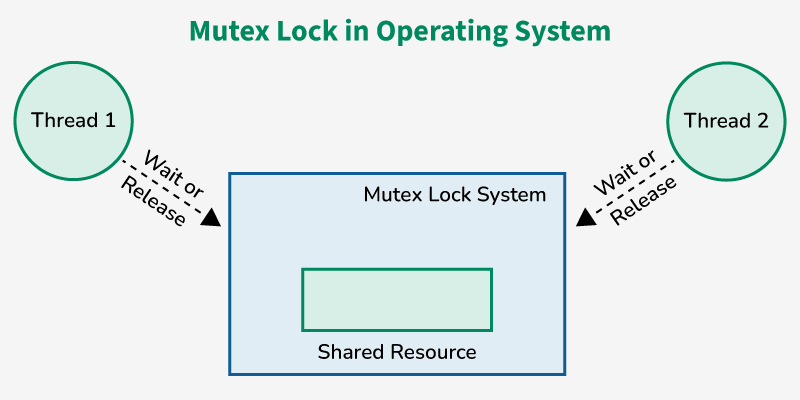
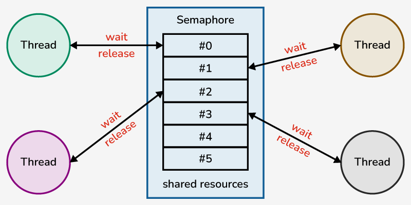

Also known as locks.
Mutex stands for "mutual exclusion object"
With mutexes, only one thread can access the shared section at a time
◆︎ ◆︎ ◆︎

| Advantages | Disadvantages |
| No race conditions if used properly | If thread holding the mutex goes to sleep, it blocks other threads, can lead to starvation |
| Can be easier to work with, keeping track of mutexes is more explicit | If used incorrectly (eg. forgetting to unlock), can cause deadlock |
Semaphore: a non-negative integer variable shared between threads
The control mechanims is less strict.
Eg. up to n threads can access a resource, instead of mutual exclusion
◆︎ ◆︎ ◆︎

| Advantages | Disadvantages |
| Can do things locks can't (eg. allowing up to n threads to access a resource) | May be harder to work with as it requires implicit tracking of semaphore value |
| Machine-independent, flexible resource management | Loss of modulatrity, can't be used for large-scale systems |